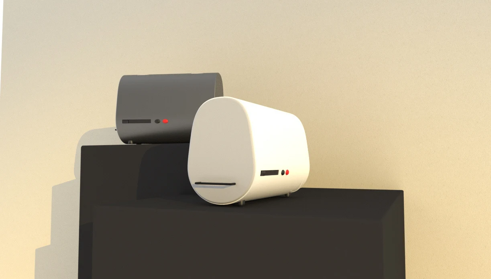
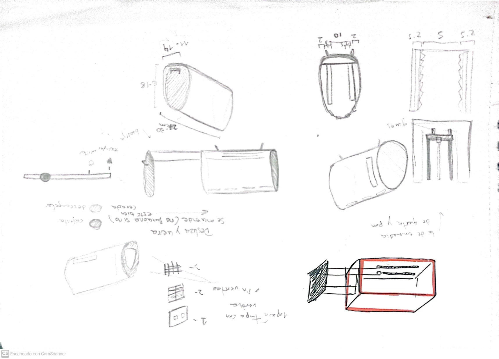

Diseño de producto
Tostadora
Diseño conceptual de una tostadora doméstica de formas orgánicas y estética futurista. La propuesta explora la disipación del calor, un bloqueo de seguridad para la tapa y un soporte desmontable adaptable a distintos tamaños de pan.



